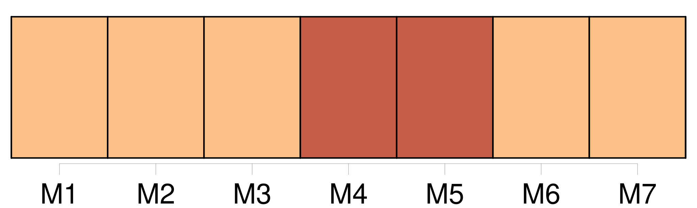
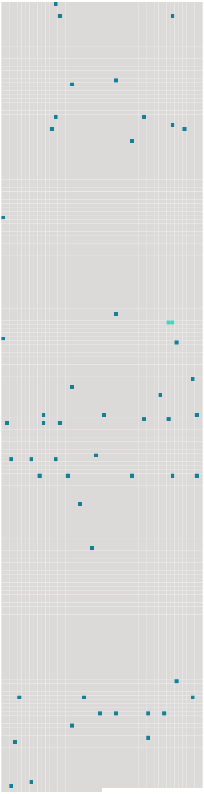

Longueur nb maillons : 51 mentions |
 |
Le vieux commença par faire des théories, selon son habitude : [9 phrases]
[On] ne lui demande qu’ une chose, c’ est de devenir un brave homme. [1 phrases] [On] l’ entendait téter avec un halètement goulu. [55 phrases]
Puis, quand le choix est fait, il n’ y a plus à y revenir : il ne reste qu’ à faire [son] devoir, honnêtement.
Il retourna s’ asseoir, prit un temps, et dit avec la solennité qu’ il apportait à tous ses aphorismes : [16 phrases] Elle semblait écrasée par eux ; [on] ne la remarquait guère ; et elle cherchait à s’ effacer encore plus. Si Melchior avait eu bon cœur, [on] eût pu croire qu’ il avait préféré à tout autre avantage la simple bonté de Louisa ; mais il était l’ homme le plus vain. [2 phrases]
[on] eût dit une gageure! Mais Melchior était de ces hommes qui font toujours le contraire de ce qu’ [on] attend d’ eux et de ce qu’ ils en attendent eux -mêmes. Ce n’ est pas qu’ ils ne soient avertis : – un homme averti en vaut deux, dit [-on] …… [5 phrases]
Mais peut-être y a-t -il en [nous] d’ autres puissances que l’ esprit et le cœur, d’ autres même que les sens, – de mystérieuses puissances, qui prennent le commandement dans les instants de néant où s’ endorment les autres ; et peut-être Melchior les avait -il rencontrées au fond des pâles prunelles qui le regardaient timidement, un soir qu’ il avait abordé la jeune fille sur la berge du fleuve, et qu’ il s’ était assis près d’ elle, dans les roseaux, – sans savoir pourquoi, – pour lui donner sa main. [43 phrases] [On] dirait que cette misérable masse inconsciente et informe a le pressentiment de la vie de peines qui lui est réservée. [63 phrases] – Et, du fond de la chambre, il semble, en les entendant, qu’ [on] voie passer les belles ondes sonores qui coulent dans l’ air léger, les libres oiseaux, et le tiède souffle du vent. [3 phrases] Voici la table où [l’ on] mange, le placard où il se cache pour jouer, le carrelage en losanges sur lequel il se traîne, et le papier du mur, dont les grimaces lui content des histoires burlesques ou effrayantes, et l’ horloge qui jacasse des paroles boiteuses, qu’ il est seul à comprendre. [7 phrases] [On] s’ y perd. [4 phrases]
[On] est bien … [29 phrases] Il est effrayé et humilié ; et en même temps, l’ idée de l’ âne auquel [on] le compare le fait pouffer. [7 phrases] Quand pourra-t [-on] se lever?? [8 phrases] [On] lui défend de remuer, et les gens disent ensemble des mots qu’ il ne comprend pas, et puis se taisent ensemble. [9 phrases] Il ne comprend rien à ce bruit, il ne sait pas ce que cela veut dire : cela brille, cela tourbillonne, [on] ne peut rien distinguer. [1 phrases] C’ est comme si [on] n’ était plus assis, depuis une heure, sur une chaise qui fait mal, dans une ennuyeuse vieille maison. [On] est suspendu dans l’ air, comme un oiseau ; et quand le fleuve de sons ruisselle d’ un bout à l’ autre de l’ église, remplissant les voûtes, rejaillissant contre les murs, [on] est emporté avec lui, [on] vole à tire-d’aile, de -ci de -là, [on] n’ a qu’ à se laisser faire. [On] est libre, [on] est heureux, il fait soleil …… [32 phrases]
Il fut rudement attrapé parfois, quand [on] le surprit ainsi. [1 phrases] D’ abord, [on] court après lui, [on] le rattrape. Puis, [on] s’ habitue à le laisser aller seul, pourvu qu’ il ne s’ éloigne pas trop. [8 phrases] [On] n’ imagine pas le parti qu’ [on] peut tirer d’ un simple morceau de bois, d’ une branche cassée, comme [on] en trouve le long des haies. ( Quand [on] n’ en trouve pas, [on] en casse. [15 phrases] Il touchait les fleurs, en leur enjoignant de se changer en carrosses dorés, comme [on] lui avait dit qu’ elles faisaient dans les contes ; et bien que cela n’ arrivât jamais, il était persuadé que cela ne manquerait pas d’ arriver, avec un peu de patience. [27 phrases] [On] sentait qu’ il s’ écoutait avec ravissement. [62 phrases]
Ce fut une méchante affaire : le vieux était solennel et n’ admettait point la raillerie sur le respect qu’ [on] lui devait ; ils restèrent en froid pendant plus d’ une semaine. [5 phrases] Parfois, [on] rencontrait sur la grande route un paysan dans sa carriole. [1 phrases] [On] montait auprès de lui. [1 phrases] Le cheval filait vite, et Christophe riait de joie, à moins qu’ [on] ne vînt à croiser d’ autres promeneurs : alors, il prenait un air grave et dégagé, comme quelqu’un qui est habitué à aller en voiture ; mais son cœur était inondé d’ orgueil. [8 phrases] Christophe réfléchissait : il pensait que quand [on] est grand, [on] ne s’ étonne plus de rien, [on] est fort, [on] connaît tout. [9 phrases] [On] n’ y prit pas garde. [8 phrases] Le soir, en revenant, elle couvrait une partie de la prairie ; [on] rencontrait une meule, la tête montait dessus et se retrouvait à sa place, quand [on] avait passé ; le museau était tiré comme un ballon crevé ; les oreilles étaient grandes et pointues comme des cierges. [34 phrases] [On] revenait au gîte, et les grillons chantaient. [2 phrases]
… Les voyages qu’ [on] fait plus tard, les grandes villes, les mers mouvantes, les paysages de rêves, les figures aimées, ne se gravent pas dans l’ âme avec la justesse infaillible de ces promenades d’ enfance, ou du simple coin de jardin tous les jours entrevu par la fenêtre, à travers la buée de vapeur que fait sur la vitre la petite bouche collée de l’ enfant désœuvré … |
 |
Il est possible de télécharger la ressource sur la page Ortolang |
Si vous avez des questions ou vous voyez des erreurs, merci d'envoyer un mail à silvia.federzoni89@gmail.com |